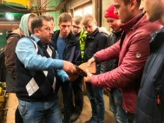
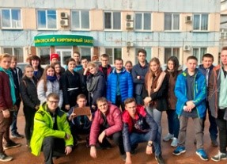
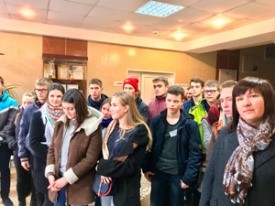
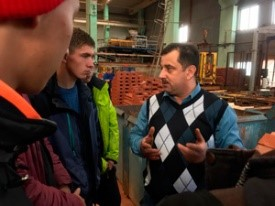

Экскурсия на Чайковский кирпичный завод 2015
4 октября наша группа строителей 2-08.02 посетила Чайковский кирпичный завод, где нам провели увлекательную экскурсию по производству кирпича, начиная с подготовки сырья и заканчивая готовым материалом. Нам, как строителям, было безумно интересно увидеть вживую, как производится продукт, с которым тесно связана наша будущая профессия. При входе чувствуется рабочая атмосфера завода и не проникнуть в нее было невозможно, ведь увидеть всю технологию процесса, оборудование, сырьё и готовый продукт своими глазами – интереснее всего! Работник завода всё доходчиво нам объяснил, ответил на все интересующие нас вопросы, а также дал потрогать еще необожженный кирпич и даже подарил нам один на память. Мы наблюдали все этапы изготовления кирпича – от его формирования до его сушки. Сама экскурсия длилась около часа, но я даже не заметила, как пролетело время, потому что работа механизмов всегда завораживает. В конце нам подарили только что изготовленный на наших глазах кирпич, на котором мы собственноручно оставили номер нашей группы. Говорим отдельное спасибо экскурсоводу за то, что подробно рассказал, как все устроено. Полученные знания несомненно пригодятся нам в дальнейшем обучении. «Спасибо!» мы говорим Чайковскому кирпичному заводу и его сотрудникам.



